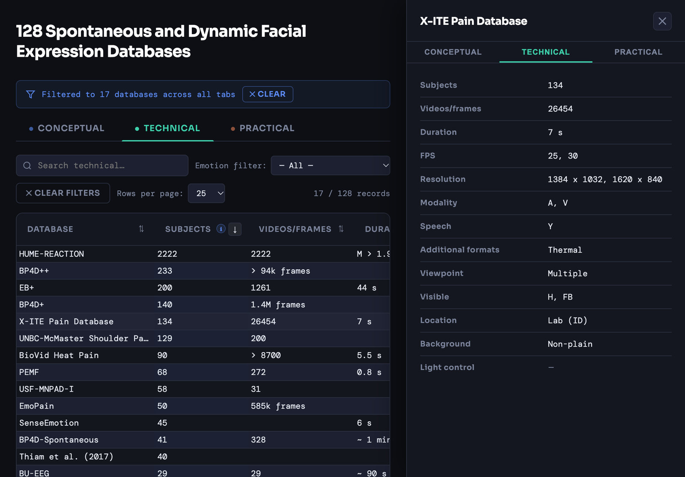

01 / 05Published · August 2026
Facial Expression Database Finder
Search 128 video databases of spontaneous (unposed) facial expressions.

The recording: someone types “pain” into the search box and the count drops from 128 to 17 databases. They switch to the Technical tab, where the same 17 remain, and sort them by number of people so the largest collections come first. On wider screens they also open the card for the X-ITE Pain Database on its technical details (number of people and videos, clip length, frame rate, resolution, sound and speech, thermal video, camera viewpoint and setting) and close it again. Then they go back to the first tab and clear the search, and all 128 databases return.
ExampleType “pain” and 128 databases narrow to 17 in an instant, and they stay filtered in all three views: what was recorded, how, and how to get it.
FormatInteractive web table · 32 details per database · Supplementary Table S1, Emotion Review 2026
Published August 2026 · version 1